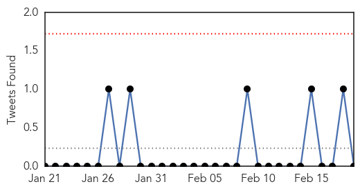
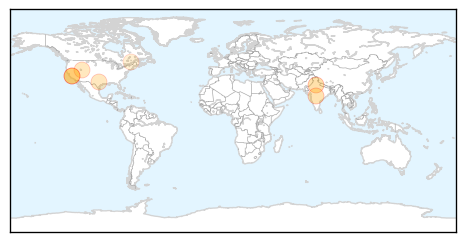
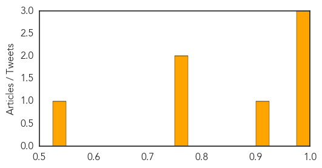

Influenza
30-Day Web Trend
0 alerts, 0 warnings

30-Day Twitter Trend
0 alerts, 0 warnings

Article Locations
Article Confidences
Top Articles:
- 0.982
- Don't Pay Extra For Your Swine Flu Test, Govt Wants To Regulate Prices
- 0.982
- Man, 33, dies of flu in Riverside County
- 0.978
- First Riverside County Resident Dies from Flu Complications...
- 0.904
- IDRI Announces $4M BARDA Cooperative Agreement To Establish Adjuvant Hub
- 0.751
- February 18, 2015 Archives
- 0.751
- February 18, 2015 Archives
- 0.530
- GSK won't be able to supply 2 million doses of flu vaccine promised for 2014-15
Top Tweets:
-
No tweets found for Feb 19, 2015
Dengue Fever
30-Day Web Trend
3 alerts, 0 warnings

30-Day Twitter Trend
0 alerts, 0 warnings

Article Locations

Article Confidences

Top Articles:
- 0.997
- Fighting to break the dengue cycle - Nation
- 0.993
- Which ‘Neglected’ Illnesses And Infections Top WHO’s List?
- 0.993
- 86 people struck down with crippling Ross River virus
- 0.986
- Fighting to break the dengue cycle, Others news, Health News, AsiaOne YourHealth
- 0.982
- Mosquito Viruses Are a Biting Concern for Snowbirds
- 0.947
- Cong. Lilia Nuño lauds city health execs for anti-dengue drive success
- 0.914
- Climate change could increase the spread of tropical diseases
- 0.907
- FBC News
- 0.898
- WHO Urges Billions to Fight Neglected Tropical Diseases — Naharnet
- 0.825
- Growing mosquito threat calls for mutant measures
- 0.746
- Mosquito threat persists, yet no entomologists
Top Tweets:
- 0.929
- Flavivirus news: Paper Test Quickly Detects Ebola, Dengue and Yellow Fever - Scientific America... http://t.co/6Par1byJgN pathogenposse
- 0.880
- Paper Test Quickly Detects Ebola, Dengue, And YellowFever http://t.co/19wVU4uua7